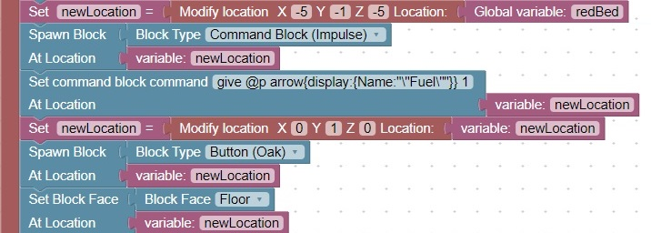

Spawn a command block with an oak button on top
This code will spawn a command block with a command to give the nearest player an arrow with the custom name: Fuel.
Note the use of Face to force the button to be placed on the bottom (floor) of the location.
